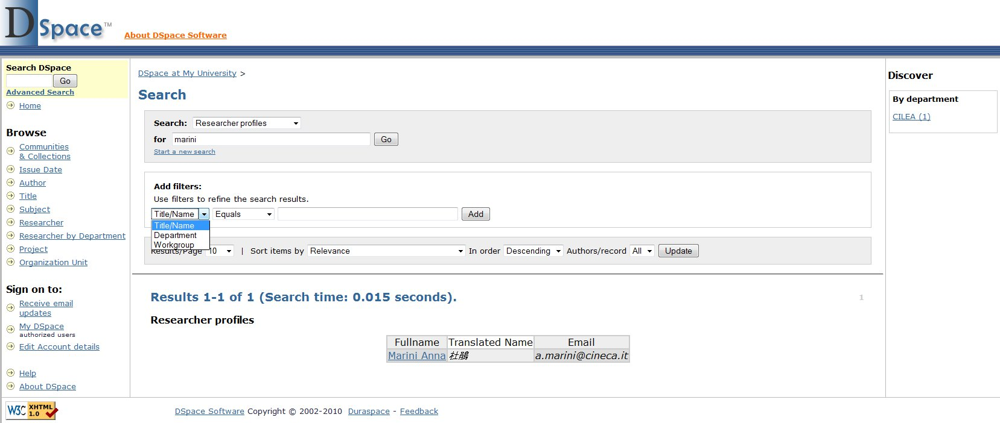
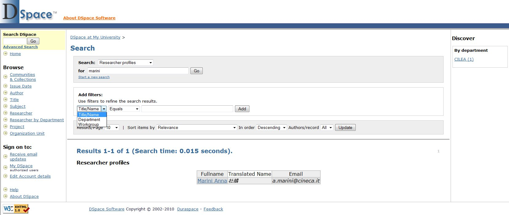
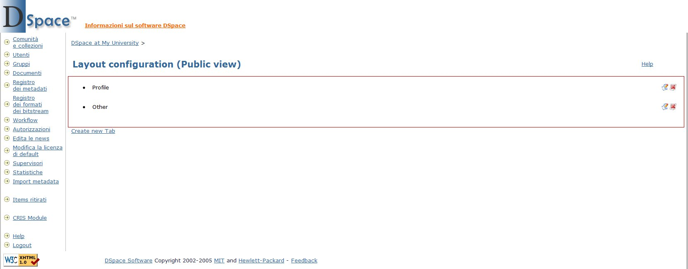

Screenshot
The screenshot below show some of the main features of the DSpace CRIS module with the sample configuration and basic layout.
For a more exahustive tour of the DSpace CRIS capability please take a look to the institutional repository of The University of Hong Kong, The HKU Scholars Hub.
Researcher profile | Faceted Search & Browse | Administration UI
Researcher profile
Faceted Search & Browse
 

Administrative UI
